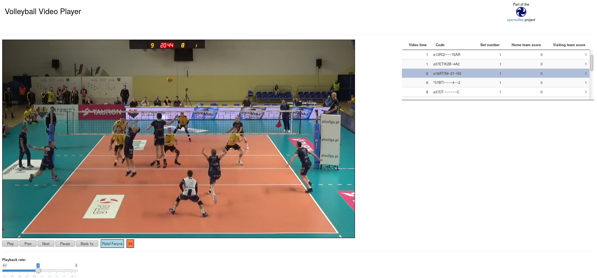

Installation
You can install from GitHub with:
## install.packages("remotes") ## if needed
remotes::install_github("openvolley/ovplayer")About
This R package provides a Shiny app for viewing volleyball video playlists.
At this stage it is entirely experimental. Beware!
Example usage
library(ovplayer)
library(ovideo)
## read data file bundled with package
## this is a very small example file that contains only one rally
x <- datavolley::dv_read(system.file("extdata/190301_kats_beds-clip.dvw", package = "ovplayer"))
## change the video file to point to our local copy, which is bundled with the ovideo package
x$meta$video <- data.frame(camera = "",
file = system.file("extdata/2019_03_01-KATS-BEDS-clip.mp4", package = "ovideo"),
stringsAsFactors = FALSE)
## extract play-by-play data
px <- datavolley::plays(x)
## normally we would now filter px to the actions we are specifically interested in
## but here we just use all actions because the scout file is only from the one rally
## that the video covers
px <- px[!is.na(px$skill), ]
## make subtitle columns (shown just underneath the player)
px$subtitle <- px$player_name
px$subtitleskill <- ifelse(px$skill == "Attack", px$attack_code, px$skill)
## build our playlist of these actions
ply <- ov_video_playlist(px, x$meta, extra_cols = c("subtitle", "subtitleskill", "video_time", "code", "set_number", "home_team_score", "visiting_team_score"))
## start the shiny app
ovp_shiny(playlist = ply, video_server = "servr")
## Or the mobile version. This will be served from your laptop/desktop and can
## be viewed by a mobile device on the same (wifi) network
## You need to know the IP address of your laptop/desktop, we use "192.168.1.21" here
ovp_shiny(playlist = ply, mobile = TRUE, host = "192.168.1.21", video_server = "servr")
## and then go to "192.168.1.21:port" on your mobile to check it out (same wifi), where
## port is the port being used by the shiny appAnd you should get something like:
